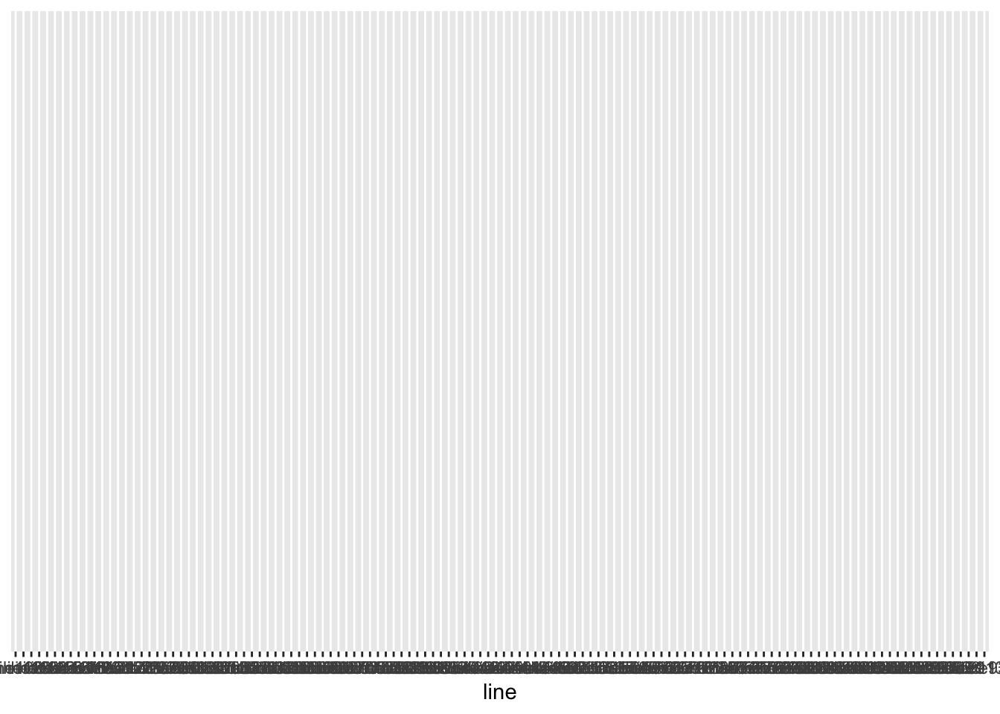

Last updated: 2023-03-21
Checks: 7 0
Knit directory: fitnessGWAS/
This reproducible R Markdown analysis was created with workflowr (version 1.7.0.4). The Checks tab describes the reproducibility checks that were applied when the results were created. The Past versions tab lists the development history.
Great! Since the R Markdown file has been committed to the Git repository, you know the exact version of the code that produced these results.
Great job! The global environment was empty. Objects defined in the global environment can affect the analysis in your R Markdown file in unknown ways. For reproduciblity it’s best to always run the code in an empty environment.
The command set.seed(20180914) was run prior to running
the code in the R Markdown file. Setting a seed ensures that any results
that rely on randomness, e.g. subsampling or permutations, are
reproducible.
Great job! Recording the operating system, R version, and package versions is critical for reproducibility.
Nice! There were no cached chunks for this analysis, so you can be confident that you successfully produced the results during this run.
Great job! Using relative paths to the files within your workflowr project makes it easier to run your code on other machines.
Great! You are using Git for version control. Tracking code development and connecting the code version to the results is critical for reproducibility.
The results in this page were generated with repository version 3a5750d. See the Past versions tab to see a history of the changes made to the R Markdown and HTML files.
Note that you need to be careful to ensure that all relevant files for
the analysis have been committed to Git prior to generating the results
(you can use wflow_publish or
wflow_git_commit). workflowr only checks the R Markdown
file, but you know if there are other scripts or data files that it
depends on. Below is the status of the Git repository when the results
were generated:
Ignored files:
Ignored: .DS_Store
Ignored: .Rapp.history
Ignored: .Rhistory
Ignored: .Rproj.user/
Ignored: .httr-oauth
Ignored: .pversion
Ignored: analysis/.DS_Store
Ignored: code/.DS_Store
Ignored: code/Drosophila_GWAS.Rmd
Ignored: data/.DS_Store
Ignored: data/derived/
Ignored: data/input/.DS_Store
Ignored: data/input/.pversion
Ignored: data/input/dgrp.fb557.annot.txt
Ignored: data/input/dgrp2.bed
Ignored: data/input/dgrp2.bim
Ignored: data/input/dgrp2.fam
Ignored: data/input/huang_transcriptome/
Ignored: figures/.DS_Store
Ignored: old_analyses/.DS_Store
Untracked files:
Untracked: old_analyses/Data for old analyses/
Untracked: old_analyses/eQTL_analysis.Rmd
Untracked: old_analyses/fitness_data.csv
Untracked: old_analyses/gcta_quant_genetics_OLD.Rmd
Untracked: old_analyses/quantitative_genetics_OLD_brms.Rmd
Unstaged changes:
Modified: figures/fig3_boyle_plot.pdf
Modified: figures/fig4_mutation_load.pdf
Modified: figures/fig5_quartiles_plot.pdf
Modified: figures/fig6_antagonism_ratios.pdf
Modified: figures/fig7_models.pdf
Note that any generated files, e.g. HTML, png, CSS, etc., are not included in this status report because it is ok for generated content to have uncommitted changes.
These are the previous versions of the repository in which changes were
made to the R Markdown (analysis/quant_genetics.Rmd) and
HTML (docs/quant_genetics.html) files. If you’ve configured
a remote Git repository (see ?wflow_git_remote), click on
the hyperlinks in the table below to view the files as they were in that
past version.
| File | Version | Author | Date | Message |
|---|---|---|---|---|
| Rmd | 358afb4 | lukeholman | 2023-03-21 | Tidying up and small edits |
| Rmd | b3604fe | lukeholman | 2023-03-15 | Tweaks |
| html | ea08653 | lukeholman | 2023-03-13 | Build site. |
| Rmd | d16c98d | lukeholman | 2023-03-13 | wflow_publish("analysis/quant_genetics.Rmd") |
| html | 7fc071b | lukeholman | 2023-03-13 | Build site. |
| Rmd | 8613e36 | lukeholman | 2023-03-13 | wflow_publish("analysis/quant_genetics.Rmd") |
library(tidyverse)
library(kableExtra)
library(rptR)
options(readr.show_col_types = FALSE)
# Load the 'raw' data, giving the fitness of each replicate vial
fitness_data <- bind_rows(
read_csv("data/input/female_fitness_CLEANED.csv"),
read_csv("data/input/male_fitness_CLEANED.csv")) %>%
mutate(male_fitness_early = early.male.focal / (early.male.focal + early.male.rival),
male_fitness_late = late.male.focal / (late.male.focal + late.male.rival)) %>%
rename_all(~ str_replace_all(.x, "[.]", "_"))
# Load the estimated line mean fitness values calculated by brms
line_means <- read_csv("data/derived/predicted_line_means.csv") %>%
mutate(line = factor(str_remove_all(line, "_"))) %>%
filter(!is.na(male.fitness.early)) %>%
mutate(`Female fitness early` = female.fitness.early,
`Female fitness late` = female.fitness.late,
`Male fitness early` = male.fitness.early,
`Male fitness late` = male.fitness.late) %>%
rename(female_fitness_early = female.fitness.early,
female_fitness_late = female.fitness.late,
male_fitness_early = male.fitness.early,
male_fitness_late = male.fitness.late)
line_means %>%
select(line, contains(" ")) %>% gather(Trait, Fitness, -line) %>%
ggplot(aes(line, ))
Here, we calculate the proportion of variance in each fitness trait that is explained by DGRP line. The proportion of explained variance (also called “repeatability”) for DGRP line is approximately equal to the broad sense heritability, since in our study flies from the same line have identical genotypes.
To calculate repeatability, we use the approach recommended by
Nakagawa & Schielzeth (2010, Biological Reviews 85:
935-956), which is implemented in the function rpt from the
package rptR. In short, in the code below, rpt
fits either a Poisson GLMM (for the two female fitness traits) or a
Binomial GLMM (for the two male fitness traits) using the
lme4 package, and estimates the proportion of the total
variance that is explained for each random effect in the model. For all
four fitness traits, the GLMM we fitted had the model formula
Y ~ (1 | line) + (1 | block), i.e. we fit a random
intercept for DGRP line and experimental block, and no fixed effects.
Using a model with the block effect included is more conservative and
more accurate, since not all lines were equally represented in every
block; therefore, we would artificially inflate the line-level
repeatability it we ignored variation in fitness between blocks.
When calculating repeatability from models with a link function, one can calculate either the “Latent scale approximation” or the “Original scale approximation” (see the ‘rptR’ vignette). We focus on the former, though the repeatability estimates are very similar, since in most of our analyses we focused on the estimated fitness of each DGRP line on the latent scale.
For simplicity, we present just the results of interest in the first table (which is the one discussed in the paper), and present all the results in a second table that can be viewed by clicking the tab. The “Simple table” shows the line-level repeatability, \(R\), for each trait (the Latent scale approximation), along with the associated SE and CIs from parametric bootstrapping. The “Full table” also shows the Original scale approximation estimates and the block effects.
female_early_repeatability <- rpt(female_fitness_early ~ (1 | line) + (1 | block),
grname = c("line", "block"),
data = fitness_data %>% filter(!is.na(female_fitness_early)),
datatype = "Poisson", nboot = 1000, npermut = 0)
female_late_repeatability <- rpt(female_fitness_late ~ (1 | line) + (1 | block),
grname = c("line", "block"),
data = fitness_data %>% filter(!is.na(female_fitness_late)),
datatype = "Poisson", nboot = 1000, npermut = 0)
male_early_repeatability <- rpt(cbind(early_male_focal, early_male_rival) ~ (1 | line) + (1 | block),
grname = c("line", "block"),
data = fitness_data %>%
filter(!is.na(early_male_focal) & !is.na(early_male_rival)) %>%
filter(early_male_focal + early_male_rival > 0),
datatype = "Proportion", nboot = 1000, npermut = 0)
male_late_repeatability <- rpt(cbind(late_male_focal, late_male_rival) ~ (1 | line) + (1 | block),
grname = c("line", "block"),
data = fitness_data %>%
filter(!is.na(late_male_focal) & !is.na(late_male_rival)) %>%
filter(late_male_focal + late_male_rival > 0),
datatype = "Proportion", nboot = 1000, npermut = 0)
process_rpt_object <- function(rpt, fitness_trait){
link <- cbind(data.frame(R = as.numeric(rpt$R["R_link", ]),
SE = as.numeric(rpt$se["se_link", ])),
rpt$CI_emp$CI_link) %>% mutate(Scale = "Latent scale approximation",
Predictor = c("line", "block"),
Trait = fitness_trait)
original <- cbind(data.frame(R = as.numeric(rpt$R["R_org", ]),
SE = as.numeric(rpt$se["se_org", ])),
rpt$CI_emp$CI_org) %>% mutate(Scale = "Original scale approximation",
Predictor = c("line", "block"),
Trait = fitness_trait)
bind_rows(link, original) %>%
select(Trait, Scale, Predictor, everything()) %>%
as_tibble() %>%
rename(`Lower 95% CI` = `2.5%`, `Upper 95% CI` = `97.5%`)
}
repeatability_table <- bind_rows(process_rpt_object(female_early_repeatability, "Female fitness early"),
process_rpt_object(female_late_repeatability, "Female fitness late"),
process_rpt_object(male_early_repeatability, "Male fitness early"),
process_rpt_object(male_late_repeatability, "Male fitness late"))
simple_repeatability_table <- repeatability_table %>%
filter(Scale == "Latent scale approximation", Predictor == "line") %>%
select(-Scale, -Predictor)
saveRDS(simple_repeatability_table, "data/derived/simple_repeatability_table.rds")simple_repeatability_table %>%
kable(digits = 2) %>% kable_styling(full_width = FALSE)| Trait | R | SE | Lower 95% CI | Upper 95% CI |
|---|---|---|---|---|
| Female fitness early | 0.49 | 0.05 | 0.39 | 0.59 |
| Female fitness late | 0.45 | 0.06 | 0.34 | 0.59 |
| Male fitness early | 0.06 | 0.01 | 0.04 | 0.08 |
| Male fitness late | 0.17 | 0.03 | 0.12 | 0.22 |
repeatability_table %>%
kable(digits = 2) %>% kable_styling(full_width = FALSE)| Trait | Scale | Predictor | R | SE | Lower 95% CI | Upper 95% CI |
|---|---|---|---|---|---|---|
| Female fitness early | Latent scale approximation | line | 0.49 | 0.05 | 0.39 | 0.59 |
| Female fitness early | Latent scale approximation | block | 0.11 | 0.05 | 0.02 | 0.22 |
| Female fitness early | Original scale approximation | line | 0.41 | 0.05 | 0.32 | 0.50 |
| Female fitness early | Original scale approximation | block | 0.08 | 0.04 | 0.01 | 0.16 |
| Female fitness late | Latent scale approximation | line | 0.45 | 0.06 | 0.34 | 0.59 |
| Female fitness late | Latent scale approximation | block | 0.20 | 0.08 | 0.03 | 0.35 |
| Female fitness late | Original scale approximation | line | 0.03 | 0.02 | 0.01 | 0.09 |
| Female fitness late | Original scale approximation | block | 0.00 | 0.00 | 0.00 | 0.01 |
| Male fitness early | Latent scale approximation | line | 0.06 | 0.01 | 0.04 | 0.08 |
| Male fitness early | Latent scale approximation | block | 0.09 | 0.04 | 0.02 | 0.16 |
| Male fitness early | Original scale approximation | line | 0.06 | 0.01 | 0.04 | 0.08 |
| Male fitness early | Original scale approximation | block | 0.09 | 0.04 | 0.02 | 0.16 |
| Male fitness late | Latent scale approximation | line | 0.17 | 0.03 | 0.12 | 0.22 |
| Male fitness late | Latent scale approximation | block | 0.06 | 0.03 | 0.00 | 0.13 |
| Male fitness late | Original scale approximation | line | 0.14 | 0.02 | 0.10 | 0.19 |
| Male fitness late | Original scale approximation | block | 0.05 | 0.03 | 0.00 | 0.10 |
The table shows the Pearson correlation coefficients (\(r\)) between the DGRP line means (estimated
from the two brms models in the script
get_predicted_line_means.Rmd) for each pair of fitness
traits, across our sample of DGRP lines. These correlations approximate
the genetic correlations between each pair of fitness traits.
tidy_correlation_test <- function(x, y){
focal_dat <- line_means %>%
select(!!x, !!y)
focal_dat <- focal_dat[complete.cases(focal_dat), ]
x_dat <- focal_dat %>% pull(!! x)
y_dat <- focal_dat %>% pull(!! y)
se_r <- function(corr){
sqrt((1-corr$estimate^2) / (corr$parameter))
}
corr <- cor.test(x_dat, y_dat)
tibble(
`Variable 1` = x,
`Variable 2` = y,
`Pearson correlation` = as.numeric(corr$estimate),
SE = se_r(corr),
`Lower 95% CI` = corr$conf.int[1],
`Upper 95% CI` = corr$conf.int[2],
`p value` = corr$p.value
) %>% mutate(
`p value` = round(`p value`, 4),
`p value` = replace(`p value`, `p value` < 0.0001, "< 0.0001"))
}
firstup <- function(x) {
substr(x, 1, 1) <- toupper(substr(x, 1, 1))
x
}
line_mean_corrs <- bind_rows(
tidy_correlation_test("female_fitness_early", "female_fitness_late"),
tidy_correlation_test("female_fitness_early", "male_fitness_early"),
tidy_correlation_test("female_fitness_early", "male_fitness_late"),
tidy_correlation_test("female_fitness_late", "male_fitness_early"),
tidy_correlation_test("female_fitness_late", "male_fitness_late"),
tidy_correlation_test("male_fitness_early", "male_fitness_late"),
) %>% mutate(`Variable 1` = str_replace_all(`Variable 1`, "_", " "),
`Variable 2` = str_replace_all(`Variable 2`, "_", " "),
`Variable 1` = firstup(`Variable 1`),
`Variable 2` = firstup(`Variable 2`))
saveRDS(line_mean_corrs, "data/derived/line_mean_corrs.rds")
line_mean_corrs %>% kable(digits = 3) %>% kable_styling()| Variable 1 | Variable 2 | Pearson correlation | SE | Lower 95% CI | Upper 95% CI | p value |
|---|---|---|---|---|---|---|
| Female fitness early | Female fitness late | 0.766 | 0.058 | 0.682 | 0.830 | < 0.0001 |
| Female fitness early | Male fitness early | 0.228 | 0.088 | 0.054 | 0.389 | 0.0108 |
| Female fitness early | Male fitness late | 0.172 | 0.089 | -0.004 | 0.338 | 0.056 |
| Female fitness late | Male fitness early | 0.317 | 0.086 | 0.149 | 0.467 | 3e-04 |
| Female fitness late | Male fitness late | 0.317 | 0.086 | 0.149 | 0.467 | 3e-04 |
| Male fitness early | Male fitness late | 0.864 | 0.046 | 0.812 | 0.903 | < 0.0001 |
We here use bootstrapping to test whether A) the inter-sex genetic correlation for fitness changes between the two age classes, and B) the genetic correlation between fitness in early- and late-life differs between males and females.
set.seed(1)
female_w_early <- line_means$female_fitness_early
male_w_early <- line_means$male_fitness_early
female_w_late <- line_means$female_fitness_late
male_w_late <- line_means$male_fitness_late
cor1_actual <- cor(female_w_early, male_w_early)
cor2_actual <- cor(female_w_late, male_w_late)
n_bootstraps <- 10000
n_lines <- length(female_w_early)
cor1 <- cor2 <- rep(0, n_bootstraps)
for(i in 1:n_bootstraps){
samp <- sample(n_lines, n_lines, replace = TRUE)
cor1[i] <- cor(female_w_early[samp], male_w_early[samp])
cor2[i] <- cor(female_w_late[samp], male_w_late[samp])
}
data.frame(diff = cor2 - cor1) %>%
summarise(`Inter-sex correlation (early life)` = cor1_actual,
`Inter-sex correlation (late life)` = cor2_actual,
`Difference in estimated correlations` = cor2_actual - cor1_actual,
`Difference, lower 95% CI (bootstrapped)` =
as.numeric(quantile(diff, probs = c(0.025))),
`Difference, upper 95% CI (bootstrapped)` =
as.numeric(quantile(diff, probs = c(0.975)))) %>%
gather(Parameter, `Estimated value`) %>%
kable(digits = 3) %>% kable_styling(full_width = F)| Parameter | Estimated value |
|---|---|
| Inter-sex correlation (early life) | 0.228 |
| Inter-sex correlation (late life) | 0.317 |
| Difference in estimated correlations | 0.089 |
| Difference, lower 95% CI (bootstrapped) | -0.057 |
| Difference, upper 95% CI (bootstrapped) | 0.232 |
rm(cor1); rm(cor2)
cor1_actual <- cor(female_w_early, female_w_late)
cor2_actual <- cor(male_w_early, male_w_late)
n_bootstraps <- 10000
n_lines <- length(female_w_early)
cor1 <- cor2 <- rep(0, n_bootstraps)
for(i in 1:n_bootstraps){
samp <- sample(n_lines, n_lines, replace = TRUE)
cor1[i] <- cor(female_w_early[samp], female_w_late[samp])
cor2[i] <- cor(male_w_early[samp], male_w_late[samp])
}
data.frame(diff = cor2 - cor1) %>%
summarise(`Inter-age correlation (females)` = cor1_actual,
`Inter-age correlation (males)` = cor2_actual,
`Difference in estimated correlations` = cor2_actual - cor1_actual,
`Difference, lower 95% CI (bootstrapped)` =
as.numeric(quantile(diff, probs = c(0.025))),
`Difference, upper 95% CI (bootstrapped)` =
as.numeric(quantile(diff, probs = c(0.975)))) %>%
gather(Parameter, `Estimated value`) %>%
kable(digits = 3) %>% kable_styling(full_width = F)| Parameter | Estimated value |
|---|---|
| Inter-age correlation (females) | 0.766 |
| Inter-age correlation (males) | 0.864 |
| Difference in estimated correlations | 0.098 |
| Difference, lower 95% CI (bootstrapped) | 0.008 |
| Difference, upper 95% CI (bootstrapped) | 0.215 |
rm(cor1); rm(cor2)
sessionInfo()R version 4.2.2 (2022-10-31)
Platform: x86_64-apple-darwin17.0 (64-bit)
Running under: macOS Big Sur ... 10.16
Matrix products: default
BLAS: /Library/Frameworks/R.framework/Versions/4.2/Resources/lib/libRblas.0.dylib
LAPACK: /Library/Frameworks/R.framework/Versions/4.2/Resources/lib/libRlapack.dylib
locale:
[1] en_US.UTF-8/en_US.UTF-8/en_US.UTF-8/C/en_US.UTF-8/en_US.UTF-8
attached base packages:
[1] stats graphics grDevices utils datasets methods base
other attached packages:
[1] rptR_0.9.22 kableExtra_1.3.4 lubridate_1.9.2 forcats_1.0.0
[5] stringr_1.5.0 dplyr_1.1.0 purrr_1.0.1 readr_2.1.4
[9] tidyr_1.3.0 tibble_3.1.8 ggplot2_3.4.1 tidyverse_2.0.0
[13] workflowr_1.7.0.4
loaded via a namespace (and not attached):
[1] httr_1.4.5 sass_0.4.5 bit64_4.0.5 vroom_1.6.1
[5] jsonlite_1.8.4 viridisLite_0.4.1 splines_4.2.2 bslib_0.4.2
[9] getPass_0.2-2 highr_0.10 yaml_2.3.7 pillar_1.8.1
[13] lattice_0.20-45 glue_1.6.2 digest_0.6.31 promises_1.2.0.1
[17] rvest_1.0.3 minqa_1.2.5 colorspace_2.1-0 htmltools_0.5.4
[21] httpuv_1.6.9 Matrix_1.5-1 pkgconfig_2.0.3 scales_1.2.1
[25] webshot_0.5.4 processx_3.8.0 svglite_2.1.1 whisker_0.4.1
[29] later_1.3.0 tzdb_0.3.0 lme4_1.1-31 timechange_0.2.0
[33] git2r_0.31.0 generics_0.1.3 ellipsis_0.3.2 cachem_1.0.7
[37] withr_2.5.0 pbapply_1.7-0 cli_3.6.0 magrittr_2.0.3
[41] crayon_1.5.2 evaluate_0.20 ps_1.7.2 fs_1.6.1
[45] fansi_1.0.4 nlme_3.1-160 MASS_7.3-58.1 xml2_1.3.3
[49] tools_4.2.2 hms_1.1.2 lifecycle_1.0.3 munsell_0.5.0
[53] callr_3.7.3 compiler_4.2.2 jquerylib_0.1.4 systemfonts_1.0.4
[57] rlang_1.0.6 grid_4.2.2 nloptr_2.0.3 rstudioapi_0.14
[61] rmarkdown_2.20 boot_1.3-28 gtable_0.3.1 R6_2.5.1
[65] knitr_1.42 fastmap_1.1.1 bit_4.0.5 utf8_1.2.2
[69] rprojroot_2.0.3 stringi_1.7.12 parallel_4.2.2 Rcpp_1.0.10
[73] vctrs_0.5.2 tidyselect_1.2.0 xfun_0.37